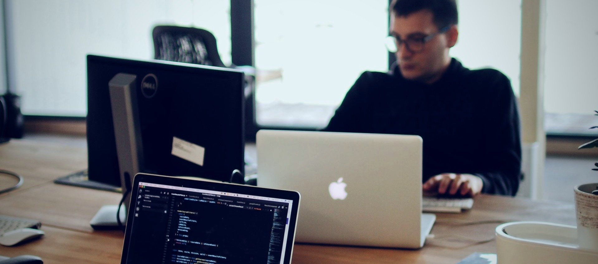

v3: реальное фото (разработчик за работой, экран с кодом) вместо программной иллюстрации графика. Формат прямоугольный, как одобрено.

Создание сайтов и SEO
Сайты и лендинги под ключ, SEO-оптимизация и продвижение в поиске
Фото: pexels.com/photo/2102416 (бесплатная лицензия) - реальная сцена разработки: экран с кодом на переднем плане, рабочее место, ноутбуки. Обработка: цветокоррекция под фирменный синий, контраст +10%, виньетка. Фоновая анимация сохранена как акцент - мягкое пульсирующее голубое свечение поверх фото (сама фотография статична, светится только акцент). Следующие 5 иконок сделаю в том же принципе (реальное фото + формат карточки + акцентная анимация), если этот вариант устроит.